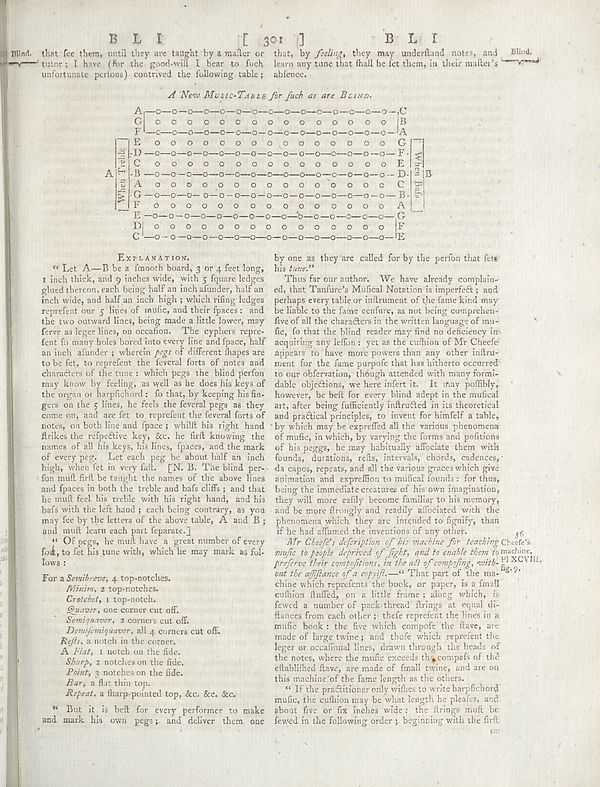

Scan ID britannica:309f765b1ecc83e0a7f7762e44b4a927a7555443:train:2155
Image SHA-256 e6a255b57f58111cfacbee95ebd743a4700db1eaef4feff1f5e2abd0bcce74e7
Status: ok. Running header: B L I [ 301] B LI (catchword). Removed page furniture: Page-header: B L I [ 301] B LI, Page-footer: 67.
PDF · raw Parse reply · LaTeX
Entries: E0183 EXPLANATION

| # | Class | Box | Parse 3.5 | Used text | Source |
|---|---|---|---|---|---|
| 1 | Text | [0.0166, 0.0578, 0.4756, 0.0984] | Blad. that fee them, until they are taught by a make or tutors; I have (for the goodwill I later to flush unfortunate person) contrived the following table: | Blind. that fee them, until they are taught by a master or tutor; I have (for the good-will I bear to such unfortunate persons) contrived the following table; | super_vl |
| 2 | Text | [0.4395, 0.0586, 0.8916, 0.0977] | this, by _feling_, they may underland notes, and Blind. learn any tune that shall be fet them, in their matter’s absence. | that, by feeling, they may understand notes, and learn any tune that shall be set them, in their master's absence. | super_vl |
| 3 | Caption | [0.2783, 0.1109, 0.6221, 0.1289] | _A New Music-Teale for fach as ate Belino._ | A New Music-Table for such as are Blind. | super_vl |
| 4 | Picture | [0.1748, 0.132, 0.7197, 0.3109] | A A C C B B A A B A A B Wine Teile A When Bele B When Bele A A When Bele A When Bele A When Bele | A A C C B B A A B A A B Wine Teile A When Bele B When Bele A A When Bele A When Bele A When Bele | parse |
| 5 | Section-header | [0.1895, 0.3203, 0.3184, 0.3352] | EXSEARATION. | EXPLANATION. | super_vl |
| 6 | Text | [0.0645, 0.3336, 0.4453, 0.6805] | " Let A—B be a Smooth board, 3 or 4 feet long, 1 inch thick, and 9 inches wide, with 7 figures ledges glued thoron each being half an inch alunder, half inch wide, and half an inch high, which tilting edges reprefront our 5 lines of moiic, and their faces; and the top outward lines, being made a little more, my few a large lines, as creation. The cypliers reprefeent to many holes lined into every line and paper, half an inch slunder > wherein pegs if different shapes are to feet, to reprend the federal forts of notes and characters of the tunes, which pegs the blind perform may know by feeling | Let A—B be a Smooth board, 3 or 4 feet long, 1 inch thick, and 9 inches wide, with 5 square ledges glued thereon, each being half an inch asunder, half an inch wide, and half an inch high; which rifling ledges represent our 5 lines of music, and their spaces: and the two outward lines, being made a little lower, may serve as leger lines, on occasion. The cyphers represent so many holes bored into every line and space, half an inch asunder; wherein pegs of different shapes are to be set, to represent the several sorts of notes and characters of the tune: which pegs the blind person may know by | super_vl |
| 7 | Text | [0.0654, 0.6813, 0.4443, 0.7227] | " Of regy, he mall have a great number of every fold, to fit his tune with, which he may mark as follows : | and must learn each part separate.] " Of pegs, he must have a great number of every fold, to set his tune with, which he may mark as sol- lows : | super_vl |
| 8 | Text | [0.0664, 0.7258, 0.2812, 0.7422] | For a Smith sees, 4 top-notches. | For a Semibreve, 4 top-notches. | super_vl |
| 9 | Text | [0.1016, 0.743, 0.2646, 0.7547] | _Niinim, 2 top-notches._ | Minim, 2 top-notches. | super_vl |
| 10 | Text | [0.1025, 0.7555, 0.2627, 0.7664] | _Grachet, 1 top-notch._ | Mann, 2 top-notches. Crochet, 1 top-notch. | super_vl |
| 11 | Text | [0.0752, 0.7672, 0.3652, 0.7797] | _Seniors, one corner cut off._ | Crotchet, 1 top-notch. Quaver, one corner cut off. | super_vl |
| 12 | Text | [0.1035, 0.7805, 0.3164, 0.7945] | _Seniorswere, 2 corners cut off._ | Quadrant, one corner cut off. Semiquadrant, 2 corners cut off. | super_vl |
| 13 | Text | [0.1006, 0.7937, 0.3643, 0.8078] | _Denifeniquaver, all 4 corners cut off._ | Semiquaver, 2 corners cut off. Demisemiquaver, all 4 corners cut off. | super_vl |
| 14 | Text | [0.0996, 0.807, 0.1045, 0.8211] | **Replo, a notch in the course.** | **Replo, a notch in the course.** | parse_fallback · box_too_small |
| 15 | List-item | [0.0986, 0.8219, 0.2979, 0.8336] | _A. That, a notch on the field._ | A Flat, a notch on the side. | super_vl |
| 16 | Text | [0.1016, 0.8344, 0.3066, 0.8484] | _Sharp, 2 notches on the field._ | A Flat, 1 notch on the side. Sharp, 2 notches on the side. Point, 3 notches on the side. | super_vl · expanded_beyond_parse |
| 17 | Text | [0.1016, 0.8609, 0.1055, 0.8734] | _Bas, a first thin top._ | _Bas, a first thin top._ | parse_fallback · box_too_small |
| 18 | Text | [0.1016, 0.8742, 0.3955, 0.8898] | _Repeat, a sharp-pointed top, &c. e.c. &c._ | Bar, a flat thin top. Repeat, a sharp-pointed top, &c. &c. &c. | super_vl |
| 19 | Footnote | [0.0635, 0.8945, 0.4463, 0.9242] | * But it is heft for every performer to make and mark his own pegs; and deliver them one | But it is best for every performer to make and mark his own pegs; and deliver them one | super_vl |
| 20 | Text | [0.4551, 0.3211, 0.8311, 0.3469] | by one as they are called for by the perfon that fets his tone.” | by one as they are called for by the person that sets his tone.” | super_vl |
| 21 | Text | [0.4541, 0.3477, 0.832, 0.6828] | Thus far our authors. We have already complained, that Timurice Mullinal Nazism in imperfect, and perhaps every take on instrument of the inner kind may be liable to the fans ceulny, as not being comprelien- the of all the characters in the written language of mu- fic, that the blind reader may find any deficiency in acquiring any lefion; yet as the cushion of Mr Cheefe appears to have more prone than any other infanter for the fans purpose that has hitherto occurred to our observation, though attended with many formi- able objections, we here refers. It may publicly, however, he bell for ever | Thus far our authors. We have already complained, that Tanfure's Musical Notation is imperfect; and perhaps every table or instrument of the same kind may be liable to the same censure, as not being comprehensive of all the characters in the written language of music, so that the blind reader may find no deficiency in acquiring any lesson; yet as the cushion of Mr Cheese appears to have more powers than any other instrument for the same purpose that has hitherto occurred to our observation, though attended with many formidable objections, we here insert it. It may possibly, however, be felt fo | super_vl |
| 22 | Text | [0.4531, 0.682, 0.8369, 0.8672] | _At Clachy’ definition of for instance, for teaching Cheete's music to people deprived of fight, and to enable them to machine, precise their compositions, in the kind of compelling, with PLAXVII, and the influence of a cryptic — “Thema of the am Ago v chine which represents the book, or paper, is a small culmite fluffus, on a little frames along which, is fewed a number of pick-thrid fringe, at equal of flances from each other; their reprend the lines in a much book of the five which compete the films, are made of larger trees; and those which represent the leger or occasional lines, drawn th | Mr Chee's description of his machine for teaching music to people deprived of sight, and to enable them to preserve their compositions, in the art of composing, without the assistance of a copyist.—"That part of the machine which represents the book, or paper, is a small cushion stuffed, on a little frame; along which, is fixed a number of pack-thread fringes at equal distances from each other; these represent the lines in a music book: the five which compose the stave, are made of large twine; and those which represent the leger or occasional lines, drawn through the heads of the notes, where | super_vl |
| 23 | Text | [0.4521, 0.868, 0.835, 0.9234] | ? If the preference only wishes to write harphochd music, the cushion may be what length he pleales, and about five or fix inches wide: the fringe matt be fewed in the following order: beginning with the first | this machine of the fame length as the others. "If the practitioner only wishes to write harpsichord music, the cushion may be what length he pleases, and about five or fix inches wide : the fringes must be sewed in the following order ; beginning with the first | super_vl |
Britannica scans: National Library of Scotland, CC0 1.0. Wikipedia text: Wikipedia contributors, CC BY-SA 4.0, revision links on each page. Generated 2026-10-18T13:26:14+00:00.